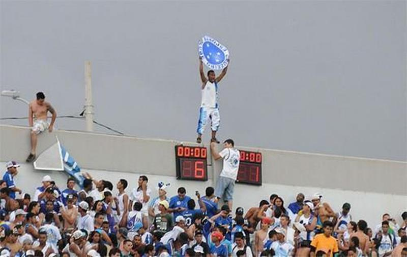

O número seis se tornou emblemático para a torcida do Cruzeiro desde que o time ganhou do Atlético por 6 a 1, na Arena do Jacaré, pela última rodada do Campeonato Brasileiro de 2011. Ao conquistar sua maior goleada sobre o rival, a equipe celeste escapou do rebaixamento à Série B – ficou em 16º lugar, com 43 pontos, a dois do Atlético-PR. Nesta segunda-feira (4/12), o placar histórico completa seis anos, e a torcida cruzeirense já usa as redes sociais para mencionar o simbolismo do sexto aniversário do triunfo, tão comemorado quanto um título.
Você certamente tem um amigo que sabe tudo ou pelo menos acha que sabe tudo. Pois é, no elenco do Cruzeiro em 1997, um jogador especificamente chamava a atenção dos demais por entender de futebol, de avião, de música ou qualquer outro assunto. Por saber de todas as coisas, obviamente, era o centro das atenções, o alvo da zoeira da boleirada na Toca da Raposa I. Com ele presente, a resenha era melhor, nunca faltava uma risada. O 'Sabichão', apelido dado pelos bicampeões da Libertadores, era o volante Donizete Oliveira. Durante a produção das reportagens do especial 'Libertadores 1997', foram poucos os jogadores que não relataram uma história do meio-campista. Na maioria delas, Donizete se destacava pelo carisma. ”Se você falava de moto, ele logo chegava e falava que a melhor moto era essa ou aquela. Se você falasse de caminhão, ele dizia que tinha um na casa dele. Ele sabia de tudo, achava pelo menos (risos)”, lembra o zagueiro Célio Lúcio. Segundo os ex-companheiros, o Sabichão também gostava de dar porrada nos rivais em campo e, depois, tirar onda no vestiário. Em entrevista exclusiva ao Superesportes, na Toca da Raposa I, Nonato, Ricardinho e Célio Lúcio contam uma boa história dessa figuraça.
Ainda em 1997, Cruzeiro e Colo Colo voltaram a se enfrentar pela Supercopa, no segundo semestre. Segundo o volante Fabinho, no jogo do Mineirão, vencido por 2 a 0, os jogadores cruzeirenses combinaram um “rodízio” para não dar paz ao atacante Basay em campo. ”Eles deram azar. No sorteio da Supercopa, o Colo Colo caiu no grupo do Cruzeiro. No Mineirão, combinamos de pegar os caras. Nosso time fez rodízio para bater no Basay e não tomar cartão. Como apanhou aquele cara. Era forte. Apanhou o jogo todo. Com poucos minutos abriu o supercílio. Depois, jogou com faixa na cabeça. Ele era homem pra caramba, ficou até o final. Chegou uma hora que ficamos com dó e paramos de bater nele”.